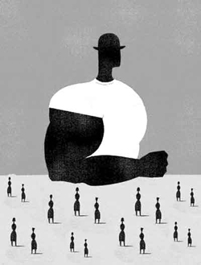

|
|

"آي آدمها که برساحل نشسته شاد و خندانيد"...قانون برای مردان نوشته شده/مريم مالک
سه شنبه13 آذر 1386
تقديم به مريم حسين خواه و جلوه جواهري و همه دربندان تبعيض

زنان همچنان با اين زشت ترين نماد تبعيض و نابرابري در حقوق و در زندگي روزمره خود در سرتاسر جهان روبهرو هستند. خشونت عليه زنان هر گونه عمل خشن مبتني بر جنسيت است كه موجب آزار يا صدمه جسمي، جنسي يا رواني گردد.
خشونت عليه زنان به چند شكل ديده ميشود:
1- خشونت فيزيكي، جسمي و جنسي كه در خانواده رخ ميدهد. مانند زدن و سوءاستفاده جنسي
2- خشونتي كه توسط دولتها رخ ميدهد: مانند وضع قوانيني كه موجب خشم ميشود مثل اجبار به عقيم كردن- اجبار به سقط و...
3- خشونتي كه در اجتماع رخ ميدهد: مانند آزار و اذيت جنسي- مزاحمتهايي در محيط كار و...
4- خشونت فرهنگي؛گاهي آداب و رسوم فرهنگي نوعي از خشونت را به زن اعمال ميكند. اين فرهنگ شامل آداب و رسوم خاصي است كه در برخي مناطق وجود دارد. مانند محدوديتي كه براي زنان بيوه وجود دارد.
عواقب غيركشنده خشونت عبارتند از: عوارض رواني: اضطراب، افسردگي، ترس، كاهش اعتماد به نفس، مشكلات جنسي، وسواس، اختلال خوردن، اختلال خواب، سرزنش خود و اختلال در ايجاد ارتباط، افسردگي در 2 ماه اول پس از خشونت رايج است و اضطراب در يك سال اول.
عوارض فيزيكي: شكستگي، آسيب به اندامهاي داخلي، بيماريهاي التهابي، عفونت، آسم و سردرد.خودكشي- ديگر كشي و ايدز از عواقب كشنده خشونت به شمار ميآيد. خشونت عليه زنان علاوه بر ايجاد مشكلات فردي مشكلات اجتماعي بسياري به همراه دارد.
این روزها اگر سری به دادگاه های خانواده بزنید به راحتی می توانید مصادیق بسیاری از انواع این خشونت ها را مشاهده کنید.می توانید پای درد دل زنانی بنشینید که خسته از قانون تبعيض آميز و تکرار این خشونتهای هر روزه به ریسمان سست عدالتی چنگ می زنند که پوسیده است و هرگز نجاتشان نخواهد داد.زنانی که تجربه خشونت نیمی از روزمرگیشان شده. من بارها این زنان را دیده ام ، با چهره هایی غمناک ، تکیده و خسته از تلخی باری که به دوش می کشند. و باورتان نمی شود اگر بگویم که وقتی از در ورودی دادگاه وارد شده ام مردانی را دیده ام که زنان خود را در راهروهای این به اصطلاح عدالتخانه کتک می زنند و مأموران جلوی آنها را نمی گیرند و زنانی را دیده ام که تنها برای آن که صدایشان را بالا برده اند توسط همین ماموران حتی از حضور در راهروهای عدالتخانه نیز محروم شده اند تا بلکه الگوی سایرین نشوند.زنانی که عمرشان در این دادگاه ها بی هدف گذشته و از هر کدامشان بپرسید می گویند: « قانون برای مردان نوشته شده»
اینان تنی چند از این هزاران زن اند ،
تازه وارد دادگاه شده بودم که صدای جیغش توجه من را به خود جلب کرد ، فریاد می زد: برو، برو . . . و بعد از آن بیهوش بر روی زمین افتاد. یکی دونفر ازخانمها او را بلند کردند و کمی که بهوش آمد و دوباره شروع به جیغ زدن کرد، مآموردادگاه برایش ماشین خبر کرده بود تا او را به بیمارستان برساند اما زن نمی رفت و مرتب جیغ می کشید ، نتوانستم بی تفاوت بگذرم جلو رفتم و زن را آرام کردم و شانه هایش را کمی ماساژ دادم وسعی کردم آرامش کنم ، اما ناگهان مأمور با عصبانیت جلو آمد و سر زن فریاد کشید که یا ساکت شو و یا از دادگاه بیرون می اندازمت. اما زن حالش همچنان بد بود و فریاد می زد ، گفتم چرا اینقدر بی تابی میکنی باید آرامش خودت را حفظ کنی و بعد او با صدای بلند شروع به گریستن کرد و گفت: دیگه خسته شدم چقدر برم و بیام، هر دفعه قاضی من رو نصیحت میکنه، به من میگه برو زندگی کن، خسته شدم. آخه شوهرم یه عیب نداره که من باهاش زندگی کنم. هوس باز هست، کتک میزنه، شراب میخوره، خرجی نمیده. امروز هم که راضیش کردم بیاد توافقی همه چی تمام بشه دوستش رو با خودش آورده و تمام مدارک من رو با خودش برده تا من رو منصرف کنه. و قاضی هم که مرتب میگه خانم شوهرت که تو رو دوست داره برو زندگی کن. ناراحتی قلبی پیدا کردم دیگه طاقت ندارم. دو تا بچه هام رو درازای بخشیدن مهریه میخوام فقط همین .
گفتم: تو که تا اینجا طاقت آوردی یه کم دیگه صبر کن درست میشه. مشغول صحبت بودیم که شوهرش با یک فرم جدید برگشت.
زن مستاصل نگاهش کرد و گفت : به همین راحتی اجازه دادی دوستت تمام مدارکمون رو ببره؟
مرد بی تفاوت سری تکان داد و زیر لب زمزمه کرد: خوب خودش رفت من چکار کنم من که نمیخوام تو رو طلاق بدم تو مجبورم کردی، حالا چیزی نشده خوب دوباره فرم پر میکنم.
و زن خوب می دانست که اگر قرار بود فرمی دوباره پر شود اصلا گم نمیشد.زن شانه ای بالا انداخت و تلو تلو خوران به سمت درب خروجی رفت.
از او که جدا شدم روی اولین سکو نشستم و خواستم کمی استراحت کنم اما زن جوانی جلویم نشسته بود و اشک می ریخت نمی توانستم بی تفاوت باشم پرسیدم :چرا گریه می کنید؟ صورت معصوم و زیبایی داشت و حدودا 25 ساله یا حتی کمتر به نظر می رسید. گفت منتظرام تا شوهرم بیاید و طلاق توافقی بگیرم. و بعد همان طور که اشک می ریخت شروع کرد به روایت سر گذشتش ، سر گذشتی آشنا که شاید بارها شنیده بودم .صدایش می لرزید و اشک تمام صورت کوچک و لاغرش را پوشانده بود .
16 سال بیشتر نداشتم که پدرم شوهرم داد. اولین فرزند خانواده بودم حتی پدرم تا سوم راهنمایی اجازه درس خواندن به من نداد و می گفت همین قدر بسه، باید ازدواج کنی. مخالفت کردم اما مگر به حرف من گوش می داد ، حالا 9 سال از زندگی من گذشته و دیگر نمی توانم با شوهرم زندگی کنم، خسته شدم، اوایل همیشه وقتی به سر کار می رفت در خانه را قفل می کرد و تلفن را قطع. یک بار نشد که خرجی دستم بدهد می گفت مرد هر چه خانه آورد همان کافی است لزومی ندارد به زن پولی بدهد. فقط سالی یکبار برایم لباس می خرید. اوایل دوستش داشتم اما بعد از دیدن رفتارهایش علاقه ام را از دست دادم. تا اینکه دو سال پیش به زور از خانه پایم را بیرون گذاشتم و به دنبال کار گشتم و کار خوبی پیدا کردم و حالا کارمند هستم اما او مخالف است و هر روز به من بد و بیراه می گوید. بالاخره بد از کلی جنگیدن با خانواده ام آنها را راضی کردم که طلاقم را بگیرم وآنها همه چیز را به عهده خودم گذاشتند.
 گفتم :حالا پدرت چه می گوید؟ آیا بقیه خواهر و برادرانت هم در سنین پایین ازدواج کردند؟
گفتم :حالا پدرت چه می گوید؟ آیا بقیه خواهر و برادرانت هم در سنین پایین ازدواج کردند؟
نه، چون پدرم چند سال پیش فوت کرده و دیگر کسی نیست که زور بگوید. خواهر و برادرانم در حال تحصیلات دانشگاهی هستند.
 بچه هم داری؟
بچه هم داری؟
ما بچه دار نمی شویم یعنی مشکل از شوهرم هست.
با تعجب گفتم : می دانی اگر این موضوع را مطرح می کردی راحت می توانستید جدا شوید؟
بله اما با وجود همین موضوع، دادگاه کلی مرا معطل کرد، به دادگاه آمدم وهمین موضوع را مطرح کردم ،
درخواست طلاق دادم ، گفتند اگر مهریه ات را می خواهی باید اینقدرپول واریز کنی تا دادگاه مهرت را بگیرد، من هم که پولی نداشتم و 8 ماه می رفتم و می آمدم و می گفتم من هیچ پولی ندارم. دیدم که فقط عمرم دارد تلف می شود برگشتم پیش شوهرم و او را راضی به طلاق توافقی کردم و قرار است او هر سه ماه یک سکه به من بدهد. اما می بینی که نیامده.
بینمان تنها سکوت بود ،او که مستاصل در اتنظار آمدن مردی بود که جوانی و تواناییش را از او ربوده بود و اکنون نیز تاب توانمند شدنش را نداشت و من هم حقیقتا درمانده بودم که چه بگویم در جواب زنی که پس از سال ها رفت و آمد درهای عدالت به سویش بسته است و حالا انتظار توافق با مردی را دارد که حتی با وجود او نیزمخالف است .
به رو به رو خیره شدم اما انگار چیزی نمی دیدم حرفهای هر دو زن در ذهنم دور می زد ،به خودم که آمدم دیدم گویا مدتیست خیره شده ام به دو زنی که در این فضا ظاهری متفاوت دارند ،پیرزنی که همراه عروسش بر روی نیمکت نشسته است ،و از شهرستان آمده تا طلاق دخترش را بگیرد. پیرزن لباس محلی پوشیده و فارسی را به سختی صحبت می کند.
نزدیکتر رفتم و باب صحبت به سادگی باز شد ، البته چندان عجیب نبود زیرا طبع ساده روستاییش که با همه صمیمی خون گرم بود شامل حال من نیز شد ،می گفت :
*ما در محلمان مدرسه نداریم و رسم داریم دخترانمان را در سنین پایین شوهر بدهیم. همه فرزندانم خوشبخت شدند ولی این آخری بدبخت شد. شوهرش لاته، زندان رفته، معتاد و چاقو کش هم هست.12 سالش بود که شوهرش دادیم به یک مرد 30 ساله ، البته فامیلمان بود و خیلی راجع بهش تحقیق نکردیم . از روز اول هم مدام به دخترم می گفت طلاقت را از من بگیر وگرنه بد می بینی.
 برای چی این را می گفت؟
برای چی این را می گفت؟
* چون خودش هم به اجبار پدرش ازدواج کرده بود آخه در منطقه ما مردها هر چه بگویند همان است و ما نباید روی حرف آنها حرف بزنیم تازه این مردها هستند که خرج ما را می دهند و بهتر از ما می توانند تصمیم بگیرند. من خودم 12 سالگی شوهر کردم و آن موقع حتی بلد نبودم غذا درست کنم حتی شوهرم را هم ندیده بودم و پدرم اون رو برام انتخاب کرد ولی زندگی بدی نداشتیم اما این دخترم اینطور شد.
 گفتم به نظرتان اگر خودش برای خودش تصمیم می گرفت بهتر نبود یا شاید بهتر نبود اگر امکان تحصیل برایش مهیا می شد ؟
گفتم به نظرتان اگر خودش برای خودش تصمیم می گرفت بهتر نبود یا شاید بهتر نبود اگر امکان تحصیل برایش مهیا می شد ؟
طوری نگاهم کرد که فهمیدم سئوال بی دلیلی پرسیدم و گفت :معلومه که بهتر بود اما روستای ما که مدرسه نداره منم که نمی تونستم اجازش رو بگیرم که بره یه جای دیگه درس بخونه ، به هر حال چاره ای نبود .
بعد پلک هاش رو بست و زیر لب گفت : کی واسه دفاع از ما زنا کاری می کنه؟
و من ناخودآگاه به یاد تک تک زنانی افتادم که برای دفاع ازحقوق تمامی زنان و برای تغییر این قوانین تبعیض آمیز گام برداشته اند اما اکنون شکل دیگری از همین قوانین ناعادلانه آنان را نیز تحت فشارهای جدی قرار داده است.مثل اینکه این دور جدیدی ار خشونت علیه زنان است.
به یاد دلارام علی می افتم که به خاطر شرکت در یک تجمع مسالمت آمیز برای تغییرهمين قوانین در حالیکه حتی مورد ضرب و شتم قرار گرفته بود و از ناحیه دست نیز دچار شکستگی شده بود به 2 سال و 6 ماه حبس محکوم شد.به ياد مريم حسين خواه و جلوه جواهری می افتم که اين روزها را در بند عمومي زندان اوين در حالي سبري مي کنند که حتي لحظه اي از نگاشتن درد و رنج زنان و خشونتهايي که با توجيه قانوني بر آنان اعمال مي شود دست نکشيده اند و حتي اين تلاش ارزنده را تا بشت ميله هاي زندان اوين نيز برده اند چرا که درست به همين دليل است که اکنون محکوم به تحمل حبس و بند شده اند.
و به یاد هانا ها و روناک ها ، تمام فعالین حقوق زنانی که در تهران و شهرستان ها ، این روزهایشان پر از اخبار بد بازداشت و دستگیری است.اما لحظه ای از تلاش دست نمی کشند.
کاش این ها را به آن پیرزن هم گفته بودم.......
منابع:
1. http://www.hoqouq.com/law/article117.html سايت حقوقي حقوق
2. http://www.hamshahrionline.ir/News/?id=12459 همشهری آنلاین
3. قطعنامه217 A (III)
4. رجوع کنيد به قطعنامه 2200 A (XXI)، پيوست
5. قطعنامه 34/180 ، پيوست
6. قطعنامه 39/46، پيوست
7. گزارش کنفرانس جهاني براي بررسي و ارزيابي دستاوردهاي دهه سازمان ملل براي زنان: برابري، پيشرفت و صلح، نايروبي، 15-26 ژوئيه 1985 (انتشارات سازمان ملل، شماره فروش E.85.IV.10)، فصل I، بخش .A
8. اعلاميه جهاني حقوق بشر، ماده 3، ميثاق بين المللي حقوق مدني و سياسي، ماده 6.
9. ميثاق بين المللي حقوق مدني و سياسي، ماده 26.
10. اعلاميه جهاني حقوق بشر، ماده 3، و ميثاق بين المللي حقوق مدني و سياسي، ماده 9.
11. ميثاق بين المللي حقوق اقتصادي، اجتماعي و فرهنگي، ماده 12.
12. اعلاميه جهاني حقوق بشر، ماده 23، و ميثاق بين المللي حقوق اقتصادي، اجتماعي و فرهنگي مواد 6 و 7.
13. اعلاميه جهاني حقوق بشر، ماده 5، ميثاق بين المللي مدني و سياسي، ماده 7، و کنوانسيون ضد شکنجه و رفتار يا مجازات خشن، غير انساني يا تحقير کننده.
P.-S.
شعر از نيما يوشيج